Code
# Paths
library(here)
# Multivariate analysis
library(ade4)
library(adegraphics)
# Matrix algebra
library(expm)
# Plots
library(ggplot2)
library(ggrepel)
library(CAnetwork)
library(patchwork)# Paths
library(here)
# Multivariate analysis
library(ade4)
library(adegraphics)
# Matrix algebra
library(expm)
# Plots
library(ggplot2)
library(ggrepel)
library(CAnetwork)
library(patchwork)# Define bound for comparison to zero
zero <- 10e-10Reciprocal scaling was introduced by Thioulouse and Chessel (1992). It is a technique allowing to compute the coordinates of each row/column cell in the multivariate space, and to plot them in a single space, which then allows to get the conditional mean and variance per row or column.
This technique was initially defined in the frame of correspondence analysis, but it is extended to canonical CA in reciprocal scaling (CCA) and double-constrained CA in in reciprocal scaling (dcCA).
Here, we will analyze matrix \(Y\):

(r <- dim(Y)[1])[1] 26(c <- dim(Y)[2])[1] 21Reciprocal scaling gives a score per correspondence (row/column pair) on each ordination axis (instead of a score per row and per column in CA).
These scores can be presented in a matrix \(H\) (\(n_\bar{0} \times K\)). Here, \(n_\bar{0}\) is the number of nonzero cells in \(Y\), also called correspondences (\(n_\bar{0} = \sum_Y p_{ij} \neq 0\)) and \(K\) is the number of eigenvalues (axes) of the CA. Each row of \(H\) corresponds to a row/column pair.
From CA scores
\(H\) can be computed from the scores of the correspondence analysis of \(Y\). The score \(h_k(i, j)\) for row \(i\), column \(j\) and axis \(k\) is:
\[ h_k(i, j) = \frac{u^\star_{ik} + v^\star_{jk}}{\sqrt{2 \lambda_k \mu_k}} \]
where \(v^\star_{jk}\) and \(u^\star_{ik}\) are the vectors of scores obtained by weighted averaging for CA for axis \(k\) (respectively equal to co and li). If \(y_{ij} = 0\), then the score \(h_k(i, j)\) is not defined.
From canonical correlation analysis
We transform the table \(Y\) in two tables:
Each row of \(R\) and \(C\) contains an indicator vector. The 1 is in the column corresponding to the row (for \(R\)) or column (for \(C\)) of the nonzero cell in \(Y\).
Additionally, we have a weights vector \(w = p_{ij}\) (the same for \(R\) and \(C\)).
Then, we perform a (weighted) canonical correlation analysis of \(R_{scaled}\) and \(C_{scaled}\). \(X_{scaled}\) corresponds to \(X\) center and scaled (here, with the weights \(w\)).
Canonical correlation analysis gives the vectors of canonical coefficients \(\rho\) and \(\gamma\) (resp. for \(R_{scaled}\) and \(C_{scaled}\)). The scores of the matrices are then \(S_R = R_{scaled} \rho\) and \(S_C = C_{scaled} \gamma\).
Finally, \(H\) is computed as:
\[ H = (S_R + S_C)_{scaled} \]
We perform the CA of table \(Y\) (\(r \times c\)).
kca <- min(r - 1, c - 1) # non-null eigenvalues
Ydf <- as.data.frame(Y)
ca <- dudi.coa(Ydf,
scannf = FALSE,
nf = kca)
Ustar <- ca$li
Vstar <- ca$co
lambda <- ca$eigWe compute the reciprocal scaling score for comparison:
rec_ca <- reciprocal.coa(ca)We can get the coordinates of row-column pairs (ie each cell in the original table \(Y\)) with:
\[ h_k(i, j) = \frac{u^\star_{ik} + v^\star_{jk}}{\sqrt{2 \lambda_k \mu_k}} \]
where \(u^\star_{ik}\) is the coordinate of row (site) \(i\) on axis \(k\) and \(v^\star_{jk}\) is the same for column (species) \(j\) and \(\mu_k = 1 + \sqrt{\lambda_k}\).
mu <- 1 + sqrt(lambda)Let’s compute \(H\) from the CA scores with our example dataset.
# Transform matrix to count table
P <- Y/sum(Y)
Pfreq <- as.data.frame(as.table(P))
colnames(Pfreq) <- c("row", "col", "Freq")
# Remove the cells with no observation
Pfreq0 <- Pfreq[-which(Pfreq$Freq == 0),]
Pfreq0$colind <- match(Pfreq0$col, colnames(Y)) # match index and species names
# Initialize results matrix
H <- matrix(nrow = nrow(Pfreq0),
ncol = length(lambda))
for (k in 1:length(lambda)) { # For each axis
ind <- 1 # initialize row index
for (obs in 1:nrow(Pfreq0)) { # For each observation
i <- Pfreq0$row[obs]
j <- Pfreq0$col[obs]
H[ind, k] <- (Ustar[i, k] + Vstar[j, k])/sqrt(2*lambda[k]*mu[k])
ind <- ind + 1
}
}The result is a matrix \(H\) with \(n_\bar{0} = \sum_Y p_{ij} \neq 0\) rows (one row for each nonzero cell in \(Y\), called correspondences) and \(K\) columns (one column per principal axis of the CA):
plotmat(r = sum(Y != 0), c = length(lambda),
Yname = "italic(H)",
rname = "italic(n[bar(0)])",
cname = "italic(K)",
plot.margin.x = 10)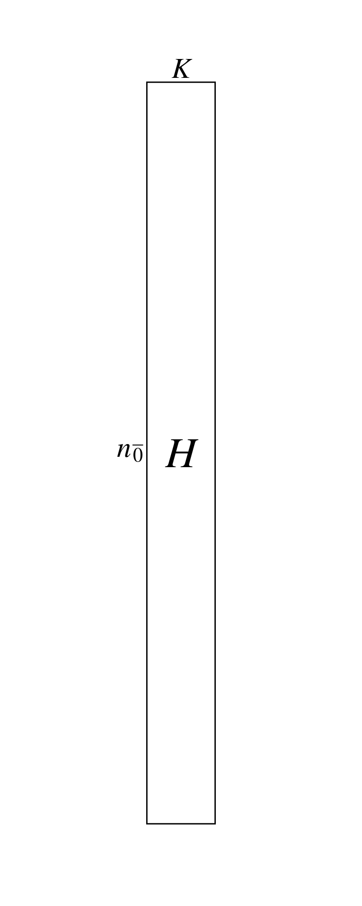
We check that the loop did what we want:
# Choose one element of H
i <- 1 # row
j <- 3 # column
jtxt <- colnames(Y)[j]
l <- 2 # axis
Htest <- H[Pfreq0$row == i & Pfreq0$col == jtxt, k]
# Compute one value with the formula
Hkij <- (Ustar[i, k] + Vstar[j, k])/sqrt(2*lambda[k]*mu[k])
# Compare
Htest/Hkij[1] 1Compare the results computed above with the results from reciprocal.coa function in ade4:
all(H/rec_ca[, 1:kca] - 1 < zero)[1] TRUECanonical correlation analysis is the extension of correlation to multidimensional analysis. This method allows to find the coefficients to maximize the correlation between the columns of two matrices.
First, we compute the inflated tables \(R\) (\(n_\bar{0} \times r\)) and \(C\) (\(n_\bar{0} \times c\)) from \(Y\) (\(r \times c\)).
We take the frequency table defined before and use it to compute the inflated tables (with weights):
# Create indicator tables
tabR <- acm.disjonctif(as.data.frame(Pfreq0$row))
colnames(tabR) <- rownames(Y)
tabC <- acm.disjonctif(as.data.frame(Pfreq0$col))
colnames(tabC) <- colnames(Y)
# Get weights
wt <- Pfreq0$Freq
Dw <- diag(wt)Below are the first lines of tables \(R\) and \(C\) (respectively):
knitr::kable(head(tabR, 30))| 1 | 2 | 3 | 4 | 5 | 6 | 7 | 8 | 9 | 10 | 11 | 12 | 13 | 14 | 15 | 16 | 17 | 18 | 19 | 20 | 21 | 22 | 23 | 24 | 25 | 26 |
|---|---|---|---|---|---|---|---|---|---|---|---|---|---|---|---|---|---|---|---|---|---|---|---|---|---|
| 1 | 0 | 0 | 0 | 0 | 0 | 0 | 0 | 0 | 0 | 0 | 0 | 0 | 0 | 0 | 0 | 0 | 0 | 0 | 0 | 0 | 0 | 0 | 0 | 0 | 0 |
| 0 | 1 | 0 | 0 | 0 | 0 | 0 | 0 | 0 | 0 | 0 | 0 | 0 | 0 | 0 | 0 | 0 | 0 | 0 | 0 | 0 | 0 | 0 | 0 | 0 | 0 |
| 0 | 0 | 1 | 0 | 0 | 0 | 0 | 0 | 0 | 0 | 0 | 0 | 0 | 0 | 0 | 0 | 0 | 0 | 0 | 0 | 0 | 0 | 0 | 0 | 0 | 0 |
| 0 | 0 | 0 | 1 | 0 | 0 | 0 | 0 | 0 | 0 | 0 | 0 | 0 | 0 | 0 | 0 | 0 | 0 | 0 | 0 | 0 | 0 | 0 | 0 | 0 | 0 |
| 0 | 0 | 0 | 0 | 1 | 0 | 0 | 0 | 0 | 0 | 0 | 0 | 0 | 0 | 0 | 0 | 0 | 0 | 0 | 0 | 0 | 0 | 0 | 0 | 0 | 0 |
| 0 | 0 | 0 | 0 | 0 | 1 | 0 | 0 | 0 | 0 | 0 | 0 | 0 | 0 | 0 | 0 | 0 | 0 | 0 | 0 | 0 | 0 | 0 | 0 | 0 | 0 |
| 0 | 0 | 0 | 0 | 0 | 0 | 1 | 0 | 0 | 0 | 0 | 0 | 0 | 0 | 0 | 0 | 0 | 0 | 0 | 0 | 0 | 0 | 0 | 0 | 0 | 0 |
| 0 | 0 | 0 | 0 | 0 | 0 | 0 | 1 | 0 | 0 | 0 | 0 | 0 | 0 | 0 | 0 | 0 | 0 | 0 | 0 | 0 | 0 | 0 | 0 | 0 | 0 |
| 0 | 0 | 0 | 0 | 0 | 0 | 0 | 0 | 1 | 0 | 0 | 0 | 0 | 0 | 0 | 0 | 0 | 0 | 0 | 0 | 0 | 0 | 0 | 0 | 0 | 0 |
| 0 | 0 | 0 | 0 | 0 | 0 | 0 | 0 | 0 | 1 | 0 | 0 | 0 | 0 | 0 | 0 | 0 | 0 | 0 | 0 | 0 | 0 | 0 | 0 | 0 | 0 |
| 0 | 0 | 0 | 0 | 0 | 0 | 0 | 0 | 0 | 0 | 1 | 0 | 0 | 0 | 0 | 0 | 0 | 0 | 0 | 0 | 0 | 0 | 0 | 0 | 0 | 0 |
| 0 | 0 | 0 | 0 | 0 | 0 | 0 | 0 | 0 | 0 | 0 | 1 | 0 | 0 | 0 | 0 | 0 | 0 | 0 | 0 | 0 | 0 | 0 | 0 | 0 | 0 |
| 0 | 0 | 0 | 0 | 0 | 0 | 0 | 0 | 0 | 0 | 0 | 0 | 1 | 0 | 0 | 0 | 0 | 0 | 0 | 0 | 0 | 0 | 0 | 0 | 0 | 0 |
| 0 | 0 | 0 | 0 | 0 | 0 | 0 | 0 | 0 | 0 | 0 | 0 | 0 | 1 | 0 | 0 | 0 | 0 | 0 | 0 | 0 | 0 | 0 | 0 | 0 | 0 |
| 0 | 0 | 0 | 0 | 0 | 0 | 0 | 0 | 0 | 0 | 0 | 0 | 0 | 0 | 1 | 0 | 0 | 0 | 0 | 0 | 0 | 0 | 0 | 0 | 0 | 0 |
| 0 | 0 | 0 | 0 | 0 | 0 | 0 | 0 | 0 | 0 | 0 | 0 | 0 | 0 | 0 | 1 | 0 | 0 | 0 | 0 | 0 | 0 | 0 | 0 | 0 | 0 |
| 0 | 0 | 0 | 0 | 0 | 0 | 0 | 0 | 0 | 0 | 0 | 0 | 0 | 0 | 0 | 0 | 1 | 0 | 0 | 0 | 0 | 0 | 0 | 0 | 0 | 0 |
| 0 | 0 | 0 | 0 | 0 | 0 | 0 | 0 | 0 | 0 | 0 | 0 | 0 | 0 | 0 | 0 | 0 | 1 | 0 | 0 | 0 | 0 | 0 | 0 | 0 | 0 |
| 0 | 0 | 0 | 0 | 0 | 0 | 0 | 0 | 0 | 0 | 0 | 0 | 0 | 0 | 0 | 0 | 0 | 0 | 1 | 0 | 0 | 0 | 0 | 0 | 0 | 0 |
| 0 | 0 | 0 | 0 | 0 | 0 | 0 | 0 | 0 | 0 | 0 | 0 | 0 | 0 | 0 | 0 | 0 | 0 | 0 | 1 | 0 | 0 | 0 | 0 | 0 | 0 |
| 0 | 0 | 0 | 0 | 0 | 0 | 0 | 0 | 0 | 0 | 0 | 0 | 0 | 0 | 0 | 0 | 0 | 0 | 0 | 0 | 1 | 0 | 0 | 0 | 0 | 0 |
| 0 | 0 | 0 | 0 | 0 | 0 | 0 | 0 | 0 | 0 | 0 | 0 | 0 | 0 | 0 | 0 | 0 | 0 | 0 | 0 | 0 | 1 | 0 | 0 | 0 | 0 |
| 0 | 0 | 0 | 0 | 0 | 0 | 0 | 0 | 0 | 0 | 0 | 0 | 0 | 0 | 0 | 0 | 0 | 0 | 0 | 0 | 0 | 0 | 1 | 0 | 0 | 0 |
| 0 | 0 | 0 | 0 | 0 | 0 | 0 | 0 | 0 | 0 | 0 | 0 | 0 | 0 | 0 | 0 | 0 | 0 | 0 | 0 | 0 | 0 | 0 | 1 | 0 | 0 |
| 0 | 0 | 0 | 0 | 0 | 0 | 0 | 0 | 0 | 0 | 0 | 0 | 0 | 0 | 0 | 0 | 0 | 0 | 0 | 0 | 0 | 0 | 0 | 0 | 1 | 0 |
| 0 | 0 | 0 | 0 | 0 | 0 | 0 | 0 | 0 | 0 | 0 | 0 | 0 | 0 | 0 | 0 | 0 | 0 | 0 | 0 | 0 | 0 | 0 | 0 | 0 | 1 |
| 0 | 0 | 0 | 0 | 0 | 0 | 0 | 0 | 0 | 0 | 0 | 0 | 1 | 0 | 0 | 0 | 0 | 0 | 0 | 0 | 0 | 0 | 0 | 0 | 0 | 0 |
| 0 | 0 | 0 | 0 | 0 | 0 | 0 | 0 | 0 | 0 | 0 | 0 | 0 | 0 | 0 | 0 | 0 | 0 | 1 | 0 | 0 | 0 | 0 | 0 | 0 | 0 |
| 0 | 0 | 0 | 0 | 0 | 0 | 0 | 0 | 0 | 0 | 0 | 0 | 0 | 0 | 0 | 0 | 0 | 0 | 0 | 0 | 0 | 1 | 0 | 0 | 0 | 0 |
| 0 | 0 | 0 | 0 | 0 | 0 | 0 | 0 | 0 | 0 | 0 | 0 | 0 | 0 | 0 | 0 | 0 | 0 | 0 | 0 | 0 | 0 | 1 | 0 | 0 | 0 |
knitr::kable(head(tabC, 30))| sp1 | sp2 | sp3 | sp4 | sp5 | sp6 | sp7 | sp8 | sp9 | sp10 | sp11 | sp12 | sp13 | sp14 | sp15 | sp16 | sp17 | sp18 | sp19 | sp21 | sp22 |
|---|---|---|---|---|---|---|---|---|---|---|---|---|---|---|---|---|---|---|---|---|
| 1 | 0 | 0 | 0 | 0 | 0 | 0 | 0 | 0 | 0 | 0 | 0 | 0 | 0 | 0 | 0 | 0 | 0 | 0 | 0 | 0 |
| 1 | 0 | 0 | 0 | 0 | 0 | 0 | 0 | 0 | 0 | 0 | 0 | 0 | 0 | 0 | 0 | 0 | 0 | 0 | 0 | 0 |
| 1 | 0 | 0 | 0 | 0 | 0 | 0 | 0 | 0 | 0 | 0 | 0 | 0 | 0 | 0 | 0 | 0 | 0 | 0 | 0 | 0 |
| 1 | 0 | 0 | 0 | 0 | 0 | 0 | 0 | 0 | 0 | 0 | 0 | 0 | 0 | 0 | 0 | 0 | 0 | 0 | 0 | 0 |
| 1 | 0 | 0 | 0 | 0 | 0 | 0 | 0 | 0 | 0 | 0 | 0 | 0 | 0 | 0 | 0 | 0 | 0 | 0 | 0 | 0 |
| 1 | 0 | 0 | 0 | 0 | 0 | 0 | 0 | 0 | 0 | 0 | 0 | 0 | 0 | 0 | 0 | 0 | 0 | 0 | 0 | 0 |
| 1 | 0 | 0 | 0 | 0 | 0 | 0 | 0 | 0 | 0 | 0 | 0 | 0 | 0 | 0 | 0 | 0 | 0 | 0 | 0 | 0 |
| 1 | 0 | 0 | 0 | 0 | 0 | 0 | 0 | 0 | 0 | 0 | 0 | 0 | 0 | 0 | 0 | 0 | 0 | 0 | 0 | 0 |
| 1 | 0 | 0 | 0 | 0 | 0 | 0 | 0 | 0 | 0 | 0 | 0 | 0 | 0 | 0 | 0 | 0 | 0 | 0 | 0 | 0 |
| 1 | 0 | 0 | 0 | 0 | 0 | 0 | 0 | 0 | 0 | 0 | 0 | 0 | 0 | 0 | 0 | 0 | 0 | 0 | 0 | 0 |
| 1 | 0 | 0 | 0 | 0 | 0 | 0 | 0 | 0 | 0 | 0 | 0 | 0 | 0 | 0 | 0 | 0 | 0 | 0 | 0 | 0 |
| 1 | 0 | 0 | 0 | 0 | 0 | 0 | 0 | 0 | 0 | 0 | 0 | 0 | 0 | 0 | 0 | 0 | 0 | 0 | 0 | 0 |
| 1 | 0 | 0 | 0 | 0 | 0 | 0 | 0 | 0 | 0 | 0 | 0 | 0 | 0 | 0 | 0 | 0 | 0 | 0 | 0 | 0 |
| 1 | 0 | 0 | 0 | 0 | 0 | 0 | 0 | 0 | 0 | 0 | 0 | 0 | 0 | 0 | 0 | 0 | 0 | 0 | 0 | 0 |
| 1 | 0 | 0 | 0 | 0 | 0 | 0 | 0 | 0 | 0 | 0 | 0 | 0 | 0 | 0 | 0 | 0 | 0 | 0 | 0 | 0 |
| 1 | 0 | 0 | 0 | 0 | 0 | 0 | 0 | 0 | 0 | 0 | 0 | 0 | 0 | 0 | 0 | 0 | 0 | 0 | 0 | 0 |
| 1 | 0 | 0 | 0 | 0 | 0 | 0 | 0 | 0 | 0 | 0 | 0 | 0 | 0 | 0 | 0 | 0 | 0 | 0 | 0 | 0 |
| 1 | 0 | 0 | 0 | 0 | 0 | 0 | 0 | 0 | 0 | 0 | 0 | 0 | 0 | 0 | 0 | 0 | 0 | 0 | 0 | 0 |
| 1 | 0 | 0 | 0 | 0 | 0 | 0 | 0 | 0 | 0 | 0 | 0 | 0 | 0 | 0 | 0 | 0 | 0 | 0 | 0 | 0 |
| 1 | 0 | 0 | 0 | 0 | 0 | 0 | 0 | 0 | 0 | 0 | 0 | 0 | 0 | 0 | 0 | 0 | 0 | 0 | 0 | 0 |
| 1 | 0 | 0 | 0 | 0 | 0 | 0 | 0 | 0 | 0 | 0 | 0 | 0 | 0 | 0 | 0 | 0 | 0 | 0 | 0 | 0 |
| 1 | 0 | 0 | 0 | 0 | 0 | 0 | 0 | 0 | 0 | 0 | 0 | 0 | 0 | 0 | 0 | 0 | 0 | 0 | 0 | 0 |
| 1 | 0 | 0 | 0 | 0 | 0 | 0 | 0 | 0 | 0 | 0 | 0 | 0 | 0 | 0 | 0 | 0 | 0 | 0 | 0 | 0 |
| 1 | 0 | 0 | 0 | 0 | 0 | 0 | 0 | 0 | 0 | 0 | 0 | 0 | 0 | 0 | 0 | 0 | 0 | 0 | 0 | 0 |
| 1 | 0 | 0 | 0 | 0 | 0 | 0 | 0 | 0 | 0 | 0 | 0 | 0 | 0 | 0 | 0 | 0 | 0 | 0 | 0 | 0 |
| 1 | 0 | 0 | 0 | 0 | 0 | 0 | 0 | 0 | 0 | 0 | 0 | 0 | 0 | 0 | 0 | 0 | 0 | 0 | 0 | 0 |
| 0 | 1 | 0 | 0 | 0 | 0 | 0 | 0 | 0 | 0 | 0 | 0 | 0 | 0 | 0 | 0 | 0 | 0 | 0 | 0 | 0 |
| 0 | 1 | 0 | 0 | 0 | 0 | 0 | 0 | 0 | 0 | 0 | 0 | 0 | 0 | 0 | 0 | 0 | 0 | 0 | 0 | 0 |
| 0 | 1 | 0 | 0 | 0 | 0 | 0 | 0 | 0 | 0 | 0 | 0 | 0 | 0 | 0 | 0 | 0 | 0 | 0 | 0 | 0 |
| 0 | 1 | 0 | 0 | 0 | 0 | 0 | 0 | 0 | 0 | 0 | 0 | 0 | 0 | 0 | 0 | 0 | 0 | 0 | 0 | 0 |
Then, we perform a canonical correlation on the scaled tables \(R_{scaled}\) and \(C_{scaled}\). We find the coefficients \(\rho\) and \(\gamma\) maximizing the correlation between the scores \(S_R = R_{scaled} \rho\) and \(S_C = C_{scaled} \gamma\).
# Center tables
tabR_scaled <- scalewt(tabR, wt,
scale = FALSE)
tabC_scaled <- scalewt(tabC, wt,
scale = FALSE)
cancorRC <- cancor(diag(sqrt(wt)) %*% tabR_scaled,
diag(sqrt(wt)) %*% tabC_scaled,
xcenter = FALSE, ycenter = FALSE) # set to false because we did our own centering before
# cancorRC gives the coefficients of the linear combinations that maximizes the correlation between the 2 dimensions
ncol(cancorRC$xcoef) # r-1 columns -> R_scaled is not of full rank[1] 25ncol(cancorRC$ycoef) # c-1 columns -> C_scaled is not of full rank[1] 20# Compute these scores from this coef
scoreR <- tabR_scaled[, 1:(r-1)] %*% cancorRC$xcoef
scoreC <- tabC_scaled[, 1:(c-1)] %*% cancorRC$ycoef# t(cancorRC$xcoef) %*% diag(1, nrow(cancorRC$xcoef)) %*% cancorRC$xcoef
# scoreR and scoreC are normed to wt
res <- t(scoreR) %*% diag(wt) %*% scoreR # R^t Dw R = 1
all(abs(res - diag(1, ncol(scoreR))) < zero) [1] TRUEres <- t(scoreC) %*% diag(wt) %*% scoreC # C^t Dw C = 1
all(abs(res - diag(1, ncol(scoreC))) < zero)[1] TRUEFinally, we compute \(H = (S_R + S_C)_{scaled}\).
# Get H
scoreRC <- scoreR[, 1:(c-1)] + scoreC[, 1:(c-1)] # here c-1 < r so c-1 axes
scoreRC_scaled <- scalewt(scoreRC, wt = wt) # normalisation à 1We check the agreement of \(H\) defined with CA of with canonical correlation analysis:
# Check agreement of RC score and H score defined above
all(abs(scoreRC_scaled/H) - 1 < zero)[1] TRUEThe scores \(H\) are displayed below on the first two axes:
multiplot(indiv_row = H,
indiv_row_lab = paste0("site ", Pfreq0$row, "/", Pfreq0$col),
row_color = "black", eig = lambda)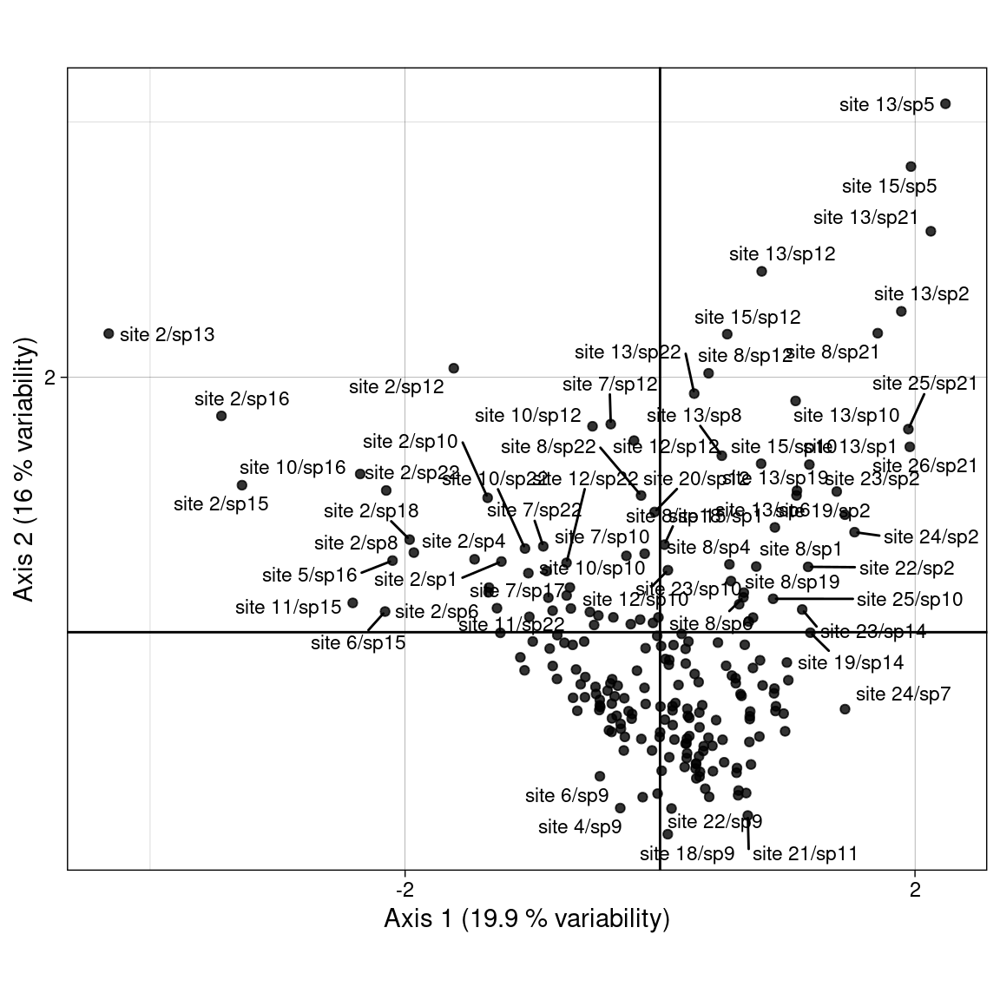
We can group those scores by sites:
# Group by sites
s.label(H,
labels = paste(Pfreq0$row, Pfreq0$col, sep = "-"),
plabels.optim = TRUE,
plabels.col = "darkgrey",
main = "Sites")
s.class(H,
wt = Pfreq0$Freq,
fac = as.factor(Pfreq0$row),
plabels.col = params$colsite,
add = TRUE)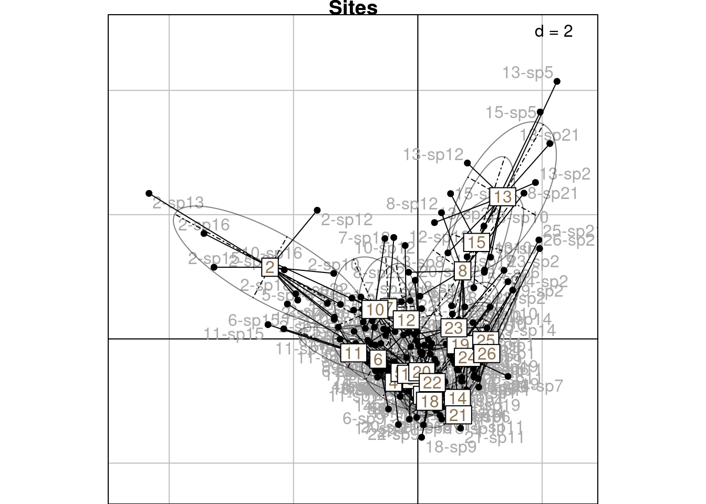
Or by species:
# Group by species
s.label(H,
labels = paste(Pfreq0$row, Pfreq0$col, sep = "-"),
plabels.optim = TRUE,
plabels.col = "darkgrey",
main = "Species")
s.class(H,
wt = Pfreq0$Freq,
fac = as.factor(Pfreq0$colind),
labels = colnames(Y),
plabels.col = params$colspp,
add = TRUE)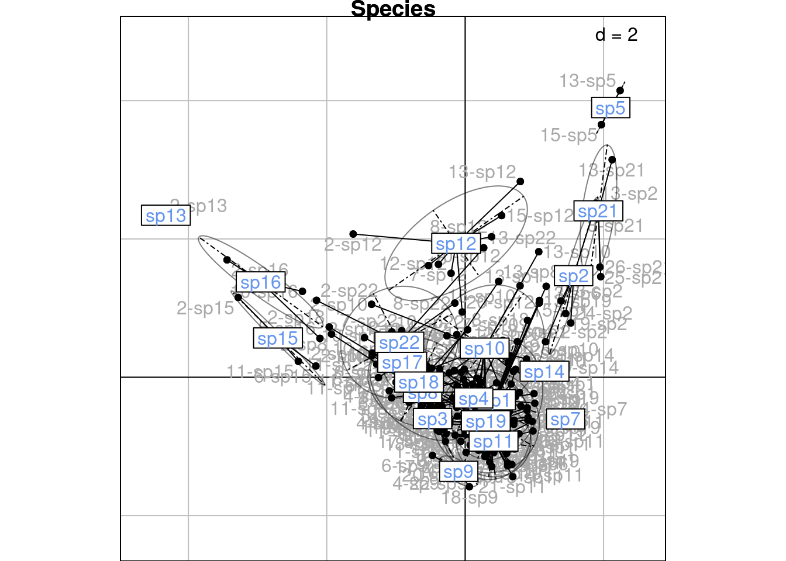
We will demonstrate more in-depth below how these groups are linked to the CA scores (means and variances can be computed directly from the CA scores.)
Once we have the correspondences scores, we can group them by row (site) or column (species) to compute conditional summary statistics:
These conditional statistics can be computed using \(h_k(i, j)\) or using the CA scores:
Formulas using \(h_k(i, j)\)
The means are simply the weighted means of the \(h_k(i, j)\) for a fixed \(i\) or \(j\) (corresponds to meanfacwt). Similarly, the variances are weighted variances (can be computed with varfacwt).
| Rows (sites) | Columns (species) | |
|---|---|---|
| Mean for axis \(k\) | \[m_{ik} = \frac{1}{p_{i\cdot}} \sum_{j = 1}^c p_{ij} h_k(i, j)\] | \[m_{jk} = \frac{1}{p_{\cdot j}} \sum_{i = 1}^r p_{ij} h_k(i, j)\] |
| Variance for axis \(k\) | \[s^2_{ik} = \frac{1}{p_{i\cdot}} \sum_{j = 1}^c p_{ij} \left(h_k(i, j) - m_{ik}\right)^2\] | \[s^2_{jk} = \frac{1}{p_{\cdot j}} \sum_{i = 1}^r p_{ij} \left(h_k(i, j) - m_{jk}\right)^2\] |
| Covariance between axes \(k\), \(l\) | \[c_{kl}(i) = \frac{1}{y_{i \cdot}}\sum_{j=1}^c p_{ij}h_k(i, j)h_l(i, j) - m_{ik}m_{il}\] | \[c_{kl}(j) = \frac{1}{p_{\cdot j}}\sum_{i=1}^r p_{ij}h_k(i, j)h_l(i, j) - m_{jk}m_{jl}\] |
Formulas using CA scores
Summary statistics are also related to CA scores.
More precisely, the means by species or site is equivalent to the CA coordinates (co and li) but with a proportionality a factor \(\frac{\sqrt{\mu_k}}{\sqrt{2\lambda_k}}\).
The variances are equivalent to a “weighted variance†(the formula resembles the variance developed formula: \(\frac{\sum x_i^2}{n} - \bar{x}^2\)).
| Rows (sites) | Columns (species) | |
|---|---|---|
| Mean for axis \(k\) | \[m_{ik} = \frac{\sqrt{\mu_k}}{\sqrt{2\lambda_k}} u^\star_{ik}\] | \[m_{jk} = \frac{\sqrt{\mu_k}}{\sqrt{2\lambda_k}} v^\star_{jk}\] |
| Variance for axis \(k\) | \[s^2_{ik} = \frac{1}{2\lambda_k\mu_k} \left( \frac{1}{y_{i \cdot}} \sum_{j = 1}^c \left(p_{ij} {v^\star_{jk}}^2 \right) - \lambda_k {u^\star_{ik}}^2 \right)\] | \[s^2_{jk} = \frac{1}{2\lambda_k\mu_k} \left( \frac{1}{p_{\cdot j}} \sum_{i = 1}^r \left(p_{ij} {u^\star_{ik}}^2 \right) - \lambda_k {v^\star_{jk}}^2 \right)\] |
| Covariance between axes \(k\), \(l\) | \[c_{kl}(i) = \frac{1}{2\sqrt{\lambda_k \lambda_l} \sqrt{\mu_k \mu_l}} \left( \frac{1}{y_{i \cdot}} \sum_{j = 1}^c p_{ij} v^\star_{jk} v^\star_{jl} - \sqrt{\lambda_k \lambda_l} u^\star_{ik}u^\star_{il} \right)\] | \[c_{kl}(j) = \frac{1}{2\sqrt{\lambda_k \lambda_l} \sqrt{\mu_k \mu_l}} \left( \frac{1}{p_{\cdot j}} \sum_{i = 1}^r p_{ij} u^\star_{ik} u^\star_{il} - \sqrt{\lambda_k \lambda_l} v^\star_{jk}v^\star_{jl} \right)\] |
Note: formulas for the variances \(s^2_{ik}\) and \(s^2_{jk}\) are different from formula (15) in Thioulouse and Chessel (1992) (no square root at the denominator \(2\lambda_k\mu_k\)).
We compute the weighted mean of \(h_k(i, j)\) per row = site \(i\).
\[ m_{ik} = \frac{1}{p_{i\cdot}} \sum_{j = 1}^c p_{ij} h_k(i, j) \] We can compute means using a loop:
# Get marginal counts
pi_ <- rowSums(P)
p_j <- colSums(P)# Initialize mean vector
mrows <- matrix(nrow = r,
ncol = kca)
for (i in 1:r) {
# Get nonzero cells for site i
rows <- which(Pfreq0$row == i)
# Get scores for site i
Hi <- H[rows, ]
# Get counts for site i
pij <- Pfreq0$Freq[rows]
# Fill i-th row with site i mean score along each axis
# (colSums sums all species j in site i)
if (is.matrix(Hi)) { # There are several species in site i
mrows[i, ] <- 1/pi_[i]*colSums(diag(pij) %*% Hi)
} else { # Only one species in that site
mrows[i, ] <- 1/pi_[i]*colSums(pij %*% Hi)
}
}We can also compute the mean using meanfacwt:
mrows2 <- meanfacwt(H, fac = Pfreq0$row, wt = Pfreq0$Freq)
# Check
res <- mrows2/mrows
all(res - 1 < zero)[1] TRUE# Check agreement with ade4 method
mrows_ade4 <- meanfacwt(rec_ca[, 1:kca],
fac = rec_ca$Row,
wt = rec_ca$Weight)
all(abs(mrows_ade4/mrows) - 1 < zero)[1] TRUEWe compute the (weighted) variance of \(h_k(i, j)\) per row = site \(i\).
\[ s^2_{ik} = \frac{1}{p_{i\cdot}} \sum_{j = 1}^c p_{ij} \left(h_k(i, j) - m_{ik}\right)^2 \]
NB: in the original article (Thioulouse and Chessel 1992) they use the compact variance formula, \(s^2{ik} = \frac{1}{p_{i\cdot}} \sum_{j = 1}^c \left(p_{ij} h_k(i, j)^2\right) - m_{ik}^2\) but I prefer the other formula.
We can use a loop:
# Initialize mean vector
varrows <- matrix(nrow = r,
ncol = kca)
for (i in 1:r) {
# Get nonzero cells for site i
rows <- which(Pfreq0$row == i)
# Get scores for site i
Hi <- H[rows, ]
# Get counts for site i
pij <- Pfreq0$Freq[rows]
# Fill i-th row with site i variance along each axis
varrows[i, ] <- 1/pi_[i]*colSums(diag(pij) %*% sweep(Hi, 2, mrows[i, ], "-")^2)
}We can also use varfacwt:
varrows2 <- varfacwt(H,
fac = Pfreq0$row,
wt = Pfreq0$Freq)
# Check
res <- varrows2/varrows
all(res - 1 < zero)[1] TRUE# Check agreement with ade4 method
varrows_ade4 <- varfacwt(rec_ca[, 1:kca],
fac = rec_ca$Row,
wt = rec_ca$Weight)
all(abs(varrows_ade4/varrows) - 1 < zero)[1] TRUE# We can also plot graphs and get back the variance graphical parameter
varrows_plot <- s.class(rec_ca[, 1:2],
fac = rec_ca$Row,
wt = rec_ca$Weight,
plot = FALSE)
varrows_ax1 <- sapply(varrows_plot@stats$covvar, function(x) x[1,1])
all(varrows_ax1/varrows[, 1] - 1 < zero)[1] TRUEFinally, we can compute the covariance between scores on the several axes per row = site \(i\). The covariance between two axes \(l\) and \(m\) of the multivariate space for site = row \(i\) is defined as:
\[ c_{kl}(i) = \frac{1}{y_{i \cdot}}\sum_{j=1}^c p_{ij}h_k(i, j)h_l(i, j) - m_{ik}m_{il} \]
kk <- 1
lk <- 2Below, we compute the covariance between axes \(k =\) 1 and \(l =\) 2.
# Test to compute covariance for site 3 only
i <- 3
rows <- which(Pfreq0$row == i)
covrow1 <- (1/pi_[i])*sum(Pfreq0$Freq[rows] * H[rows, kk] * H[rows, lk]) - mrows[i, kk]*mrows[i, lk]# Compute covariances for all sites
# Create a df containing intermediate computation and row = site identifier
df <- data.frame(var = Pfreq0$Freq*H[, kk]*H[, lk],
by = Pfreq0$row)
# Get the sum over the different species for each site
sum_per_site <- aggregate(df$var, list(df$by), sum)$x
# Then vector-compute covariances
covrows_kl <- (1/pi_)*sum_per_site - mrows[, kk]*mrows[, lk]We check that the loop does what we want:
covrows_kl[i]/covrow13
1 We could also obtain the same result with covfacwt.
covrows <- covfacwt(H, fac = Pfreq0$row, wt = Pfreq0$Freq)
# Output: a list of length fac (here, sites) with the variance covariance matrices for each site
covrows_kl2 <- sapply(covrows, function(c) c[kk, lk])
res <- covrows_kl/covrows_kl2
all(res - 1 < zero)[1] TRUEWe can also retrieve results from ade4:
# Get results with covfacwt
covrows_ade4 <- covfacwt(rec_ca[, 1:kca],
fac = rec_ca$Row,
wt = rec_ca$Weight)
res <- lapply(seq_along(covrows_ade4),
function(i) covrows_ade4[[i]]/covrows[[i]])
reslist <- sapply(res,
function(ri) all(ri - 1 < zero))
all(reslist)[1] TRUE# Get results from ade4 plot
covrows_plot <- s.class(rec_ca[, kk:lk],
fac = rec_ca$Row,
wt = rec_ca$Weight,
plot = FALSE)
covrows_kl_plot <- sapply(covrows_plot@stats$covvar, function(x) x[kk, lk])
# Check
all(abs(abs(covrows_kl_plot/covrows_kl2) - 1) < zero)[1] TRUESymetrically, we can compute the means, variances and covariances per columns = species \(j\).
\[ m_{jk} = \frac{1}{p_{\cdot j}} \sum_{i = 1}^r p_{ij} h_k(i, j) \]
mcols <- meanfacwt(H,
fac = Pfreq0$col,
wt = Pfreq0$Freq)
mcols_ade4 <- meanfacwt(rec_ca[,1:kca],
fac = Pfreq0$col,
wt = Pfreq0$Freq)
res <- mcols/mcols_ade4
all(abs(res - 1) < zero)[1] TRUE\[ s^2_{jk} = \frac{1}{p_{\cdot j}} \sum_{i = 1}^r p_{ij} \left(h_k(i, j) - m_{jk}\right)^2 \]
varcols <- varfacwt(H,
fac = Pfreq0$col,
wt = Pfreq0$Freq)
varcols_ade4 <- varfacwt(rec_ca[,1:kca],
fac = Pfreq0$col,
wt = Pfreq0$Freq)To check results, we treat as a special case species 7 and 13 because they appear in one site only:
colSums(Y != 0) == 1 sp1 sp2 sp3 sp4 sp5 sp6 sp7 sp8 sp9 sp10 sp11 sp12 sp13
FALSE FALSE FALSE FALSE FALSE FALSE TRUE FALSE FALSE FALSE FALSE FALSE TRUE
sp14 sp15 sp16 sp17 sp18 sp19 sp21 sp22
FALSE FALSE FALSE FALSE FALSE FALSE FALSE FALSE sp1 <- c(7, 13)Indeed, for this species the variance is null:
varcols[sp1, ] X1 X2 X3 X4 X5 X6 X7 X8 X9 X10 X11 X12 X13 X14 X15 X16 X17 X18
sp7 0 0 0 0 1.203706e-35 0 0 0 0 0 0 0 0 0 0 0 0 0
sp13 0 0 0 0 0.000000e+00 0 0 0 0 0 0 0 0 0 0 0 0 0
X19 X20
sp7 0 0
sp13 0 0res <- varcols[-sp1, ]/varcols_ade4[-sp1, ]
all(res - 1 < zero)[1] TRUE\[c_{kl}(j) = \frac{1}{p_{\cdot j}}\sum_{i=1}^r p_{ij}h_k(i, j)h_l(i, j) - m_{jk}m_{jl}\]
covcols <- covfacwt(H,
fac = Pfreq0$col,
wt = Pfreq0$Freq)
covcols_ade4 <- covfacwt(rec_ca[,1:kca],
fac = Pfreq0$col,
wt = Pfreq0$Freq)
res <- lapply(seq_along(covcols_ade4),
function(i) covcols_ade4[[i]]/covcols[[i]])
reslist <- sapply(res,
function(ri) all(ri - 1 < zero))
all(reslist[-sp1])[1] TRUEThe conditional means and variances of rows scores on axis \(k\) for row \(i\) can also be computed as:
\[ m_{ik} = \frac{\sqrt{\mu_k}}{\sqrt{2\lambda_k}} u^\star_{ik} \]
where \(u^\star_{ik}\) corresponds to the li for site \(i\) on axis \(k\).
mrows_ca <- sweep(ca$li, 2, sqrt(mu)/sqrt(2*lambda), "*")
# Check with ade4 value
all(abs(abs(mrows_ca/mrows_ade4) - 1) < zero)[1] TRUEThe variance can be computed as:
\[ s^2_{ik} = \frac{1}{2\lambda_k\mu_k} \left( \frac{1}{y_{i \cdot}} \sum_{j = 1}^c \left(p_{ij} {v^\star_{jk}}^2 \right) - \lambda_k {u^\star_{ik}}^2 \right) \]
Note: this formula is different from formula (15) in Thioulouse and Chessel (1992) (no square root at the denominator \(2\lambda_k\mu_k\)). Numerical computations suggest this is the correct formula.
varrows_ca <- matrix(nrow = r,
ncol = kca)
for (i in 1:r) {
# Get CA scores for site i
Li <- Ustar[i, ]
# Compute the part with the sum on Cj
# we add all coordinates Cj^2 weighted by the number of observations on site i
sumCj <- t(P[i, ]) %*% as.matrix(Vstar)^2
# Fill i-th row with site i variance along each axis
varrows_ca[i, ] <- 1/(2*lambda*mu)*((1/pi_[i])*sumCj - lambda*as.numeric(Li)^2)
}# Check with ade4 value
all(abs(abs(varrows_ca/varrows_ade4) - 1) < zero)[1] TRUEWe can also compute the covariance using CA coordinates:
\[ c_{kl}(i) = \frac{1}{2\sqrt{\lambda_k \lambda_l} \sqrt{\mu_k \mu_l}} \left( \frac{1}{y_{i \cdot}} \sum_{j = 1}^c p_{ij} v^\star_{jk} v^\star_{jl} - \sqrt{\lambda_k \lambda_l} u^\star_{ik} u^\star_{il} \right) \]
We will use the same values as above for \(k\) and \(l\): \(k =\) 20 and \(l =\) 2.
# Each site is multiplied by its score (Y*Vstar[, k] by column) and then summed per site
sum_per_site <- rowSums(P %*% diag(Vstar[, k]) %*% diag(Vstar[, l]))
covrows_ca_kl <- 1/(2*sqrt(lambda[k]*lambda[l])*sqrt(mu[k]*mu[l]))*(1/pi_*sum_per_site - sqrt(lambda[k]*lambda[l])*Ustar[, k]*Ustar[, l])Check that the CA formulas give the same result as the weighted covariance of correspondences:
# Check result
all(abs(abs(covrows_ca_kl/covrows_kl2) - 1) < zero)[1] FALSESimilarly, column statistics can be computed from CA with the following formulas:
\[ m_{jk} = \frac{\sqrt{\mu_k}}{\sqrt{2\lambda_k}} v^\star_{jk} \]
mcols_ca <- sweep(ca$co, 2, sqrt(mu)/sqrt(2*lambda), "*")
# Check
all(abs(mcols_ca/mcols_ade4 - 1) < zero)[1] TRUE\[ s^2_{jk} = \frac{1}{2\lambda_k\mu_k} \left( \frac{1}{p_{\cdot j}} \sum_{i = 1}^r \left(p_{ij} {u^\star_{ik}}^2 \right) - \lambda_k {v^\star_{jk}}^2 \right) \]
varcols_ca <- matrix(nrow = c,
ncol = kca)
for (j in 1:c) {
# Get CA scores for species j
Cj <- Vstar[j, ]
# Compute the part with the sum on Li
sumLi <- t(P[, j]) %*% as.matrix(Ustar)^2
# Fill i-th row with site i variance along each axis
varcols_ca[j, ] <- 1/(2*lambda*mu)*((1/p_j[j])*sumLi - lambda*as.numeric(Cj)^2)
}# Check
all(abs(varcols_ca[-sp1, ]/varcols_ade4[-sp1, ] - 1) < zero)[1] TRUE\[ c_{kl}(j) = \frac{1}{2\sqrt{\lambda_k \lambda_l} \sqrt{\mu_k \mu_l}} \left( \frac{1}{p_{\cdot j}} \sum_{i = 1}^r p_{ij} u^\star_{ik} u^\star_{il} - \sqrt{\lambda_k \lambda_l} v^\star_{jk}v^\star_{jl} \right) \]
We use the same values of \(k =\) 20 and \(l =\) 2 as above.
# Each spp is multiplied by its score (Y*Ustar[, k] by row) and then summed per spp
sum_per_spp <- colSums(diag(Ustar[, k]) %*% diag(Ustar[, l]) %*% Y)
covcols_kl_ca <- 1/(2*sqrt(lambda[k]*lambda[l])*sqrt(mu[k]*mu[l]))*(1/p_j*sum_per_spp - sqrt(lambda[k]*lambda[l])*Vstar[, k]*Vstar[, l])# Check
covcols_kl <- sapply(covcols_ade4,
function(x) x[k, l])
all(covcols_kl[-sp1]/covcols_kl_ca[-sp1] - 1 < zero)[1] TRUEWe can also compute compute means, variances and covariances with the R score or the C score.
We use the notation \(m_{ik}\)/\(s^2_{ik}\) for the mean/variances of sites (index \(i\)) computed with the RC scores and \(mR_{ik})\)/\(sR^2_{ik}\) for the mean/variances of sites computed with the R score. For the means computed for species, we use index \(j\) and for the means/variances computed with C scores, we use \(mC\)/\(sC^2\).
Definition
The definitions are simply the groupwise mean, variance and covariance.
| Rows (sites) | Columns (species) | |
|---|---|---|
| Mean for axis \(k\) | \[mR_{ik} = \frac{1}{p_{i\cdot}} \sum_j p_{ij} ~ \text{scoreR}_k(i, j)\] | \[mR_{jk} = \frac{1}{p_{\cdot j}} \sum_i p_{ij} ~ \text{scoreR}_k(i, j)\] |
| Variance for axis \(k\) | \[sR^2_{ik} = \frac{1}{p_{\cdot j}} \sum_j p_{ij} ~ \text{scoreR}_k(i, j)^2 - mR_{ik}^2\] | \[sR^2_{jk} = \frac{1}{y_{i \cdot}} \sum_j p_{ij} ~ \text{scoreR}_k(i, j)^2 - mR_{jk}^2\] |
| Covariance between axes \(k\), \(l\) |
| Rows (sites) | Columns (species) | |
|---|---|---|
| Mean for axis \(k\) | \[mC_{ik} = \frac{1}{p_{i\cdot}} \sum_j p_{ij} ~ \text{scoreC}_k(i, j)\] | \[mC_{jk} = \frac{1}{p_{\cdot j}} \sum_i p_{ij} ~ \text{scoreC}_k(i, j)\] |
| Variance for axis \(k\) | \[sC^2_{ik} = \frac{1}{p_{\cdot j}} \sum_j p_{ij} ~ \text{scoreC}(i, j)^2 - mC_{ik}^2\] | \[sC^2_{jk} = \frac{1}{y_{i \cdot}} \sum_j p_{ij} ~ \text{scoreC}(i, j)^2 - mC_{jk}^2\] |
| Covariance between axes \(k\), \(l\) |
Formulas using CA score
Now we can “prove†that the values defined above can be recomputed from the CA scores too.
| Rows (sites) | Columns (species) | |
|---|---|---|
| Mean for axis \(k\) | \(u_{ik}\) | \(v^\star_{jk}\) |
| Variance for axis \(k\) | None | \[\frac{1}{\lambda_k} \left( \frac{1}{p_{\cdot j}} \sum_{i = 1}^r \left(p_{ij} {u^\star_{ik}}^2 \right) - \lambda_k {v^\star_{ik}}^2 \right)\] |
| Covariance between axes \(k\), \(l\) | None |
| Rows (sites) | Columns (species) | |
|---|---|---|
| Mean for axis \(k\) | \(u^\star_{ik}\) | \(v_{jk}\) |
| Variance for axis \(k\) | \[\frac{1}{\lambda_k} \left( \frac{1}{y_{i \cdot}} \sum_{j = 1}^c \left(p_{ij} {v^\star_{jk}}^2 \right) - \lambda_k {u^\star_{ik}}^2 \right)\] | None |
| Covariance between axes \(k\), \(l\) | None |
Relation between RC scores and R score / C score
Finally, we can relate the quantity computed above (with the definition or with the CA scores) with the means/variances/covariances computed with the RC scores.
| Rows (sites) | Columns (species) | |
|---|---|---|
| Mean for axis \(k\) | \[mR_{ik} = \frac{\sqrt{2}}{\sqrt{\mu_k}} m_{ik}\] | \[mR_{jk} = \frac{\sqrt{2 \lambda_k}}{\sqrt{\mu_k}} m_{jk}\] |
| Variance for axis \(k\) | None | \[sR^2_{jk} = 2 \mu_k s^2_{jk}\] |
| Covariance between axes \(k\), \(l\) |
| Rows (sites) | Columns (species) | |
|---|---|---|
| Mean for axis \(k\) | \[mC_{ik} = \frac{\sqrt{2 \lambda_k}}{\sqrt{\mu_k}} m_{ik}\] | \[mC_{jk} = \frac{\sqrt{2}}{\sqrt{\mu_k}} m_{jk} \] |
| Variance for axis \(k\) | \[sC^2_{ik} = 2 \mu_k s^2_{ik}\] | None |
| Covariance between axes \(k\), \(l\) |
This is not at all developed in the article of Thioulouse and Chessel (1992), but we could also use directly the R scores and the C scores to compute the groupwise (species- or sites-wise) mean and variances. In fact, the means and variances computed from the scoresR and scoresC should be related to the means and variances computed from \(u^\star\) = li and \(v^\star\) = co, since scoreR = l1 and scoreC = c1.
We bother computing these because with CCA and dc-CA, we can’t use directly RC scores.
We compute the mean score per site from the column scores.
mrowsC <- meanfacwt(scoreC, fac = Pfreq0$row, wt = Pfreq0$Freq)We have \(mC_{ik} = u^\star_{ik}\).
res <- mrowsC/ca$li
all(abs(abs(res) - 1) < zero)[1] TRUEWe can prove that equality: we begin by writing the weighted mean formula of scoreC:
\[mC_{ik} = \frac{1}{p_{i\cdot}} \sum_i p_{ij} ~ \text{scoreC}_k(i, j)\] We replace scoreC with \(v_{jk}\) (this equality remains to be proven):
\[mC_k(i) = \frac{1}{p_{i\cdot}} \sum_i p_{ij} v_{jk}\]
By definition, the li are at the mean of the c1 so we can replace \(\frac{1}{p_{i\cdot}} \sum_i p_{ij} v_{jk}\) with \(u^\star_{jk}\):
\[mC_{ik} = u^\star_{jk}\]
Now, we compare variances computed with the scoreC and variances computed with the scoreRC.
varrowsC <- varfacwt(scoreC, fac = Pfreq0$row, wt = Pfreq0$Freq)We have \(sC_{ik}^2 = \frac{2\mu_k} ~ s^2_{ik}\).
res <- varrowsC / (varrows %*% diag(2*mu))
all(res - 1 < zero)[1] TRUEHere too, we can prove the relationship above between the variance of the RC score and the variance of the C score.
\[ \begin{align} sC_{ik}^2 &= \frac{1}{p_{\cdot j}} \sum_j p_{ij} ~ \text{scoreC}(i, j)^2 - mC_{ik}^2\\ &\cdots\\ sC_{ik}^2 &= \frac{2\mu_k}{n} ~ s^2_{ik} \end{align} \]
We compute the mean score per site from the sites scores (i.e. the unique scoreR, since all R values are superimposed for the same site).
mrowsR <- meanfacwt(scoreR, fac = Pfreq0$row, wt = Pfreq0$Freq)# The mean per site (row) of scoreR is the same as the unique scores
mrowsR_u <- unique(scoreR)
all(mrowsR/mrowsR_u - 1 < zero)[1] TRUE# NB: weighting doesn't make a difference because all weights are the same for the same row
mrowsR_nw <- meanfacwt(scoreR, fac = Pfreq0$row)
all(mrowsR/mrowsR_nw - 1 < zero)[1] TRUEWe have \(mR_{ik} = u_{ik}\).
res <- mrowsR/ca$l1
all(abs(res) - 1 < zero)[1] TRUEWe don’t compute variances per rows for the scoreR, because they are null.
Below are R and C scores grouped by sites (rows):
s.class(scoreC,
wt = Pfreq0$Freq,
fac = as.factor(Pfreq0$row),
ppoints.col = params$colspp,
plabels.col = params$colsite,
main = "C scores grouped by sitse (rows)")
s.class(scoreR,
wt = Pfreq0$Freq,
fac = as.factor(Pfreq0$row),
ppoints.col = params$colsite,
plabels.col = params$colsite,
main = "R scores grouped by sites (rows)")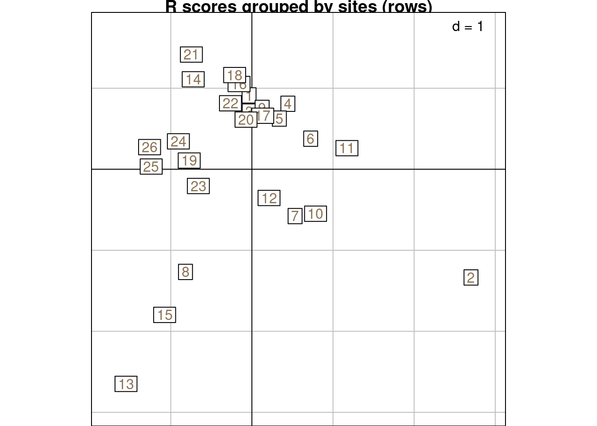
We can compare these plots to the RC scores plot below (grouped by sites/rows):
s.class(scoreRC_scaled,
wt = Pfreq0$Freq,
fac = Pfreq0$row,
labels = rownames(Y),
plabels.col = params$colsite,
main = "RC scores grouped by sites (rows)")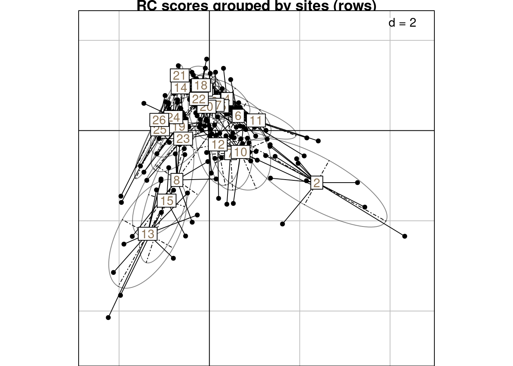
We compute the mean score per species from the column scores.
mcolsC <- meanfacwt(scoreC, fac = Pfreq0$colind, wt = Pfreq0$Freq)We have \(mC_{jk} = v_{jk}\).
# Check
res <- mcolsC/ca$c1
all(res - 1 < zero)[1] TRUEWe don’t compute variances (they are null).
We compute the mean score per species from the row scores.
mcolsR <- meanfacwt(scoreR, fac = Pfreq0$colind, wt = Pfreq0$Freq)We have \(mR_{jk} = v^\star_{jk}\).
res <- mcolsR/ca$co
all(res - 1 < zero)[1] TRUEWe compute the variance of species (columns) from the R score:
varcolsR <- varfacwt(scoreR, fac = Pfreq0$colind, wt = Pfreq0$Freq)We have \(sR^2_{jk} = 2\mu_k ~ s^2_{jk}\).
# Check
res <- (varcolsR[-sp1, 1:kca] %*% diag(1/(2*mu)))/varcols[-sp1, ]
all(res - 1 < zero)[1] TRUEConclusion: using RC scores or using R scores only to compute species-wise means and variances is the same, but there are some multiplying factors.
Below are R and C scores grouped by species (columns):
s.class(scoreC,
wt = Pfreq0$Freq,
fac = as.factor(Pfreq0$colind),
lab = colnames(Y),
ppoints.col = params$colspp,
plabels.col = params$colspp,
main = "C scores grouped by species (columns)")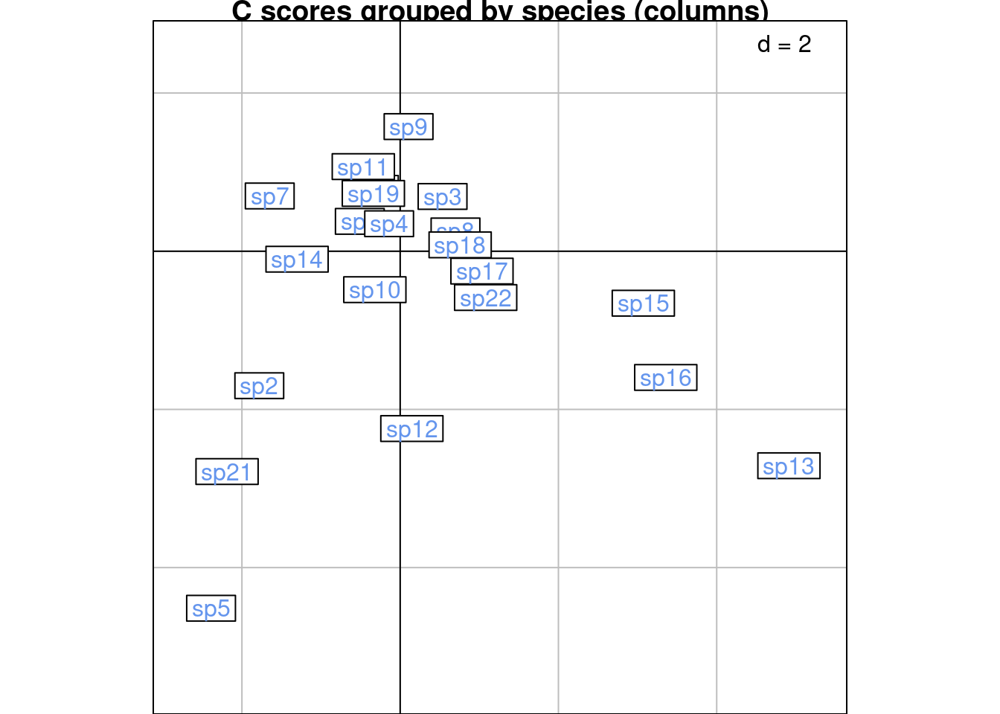
s.class(scoreR,
wt = Pfreq0$Freq,
fac = as.factor(Pfreq0$colind),
lab = colnames(Y),
ppoints.col = params$colsite,
plabels.col = params$colspp,
main = "R scores grouped by species (columns)")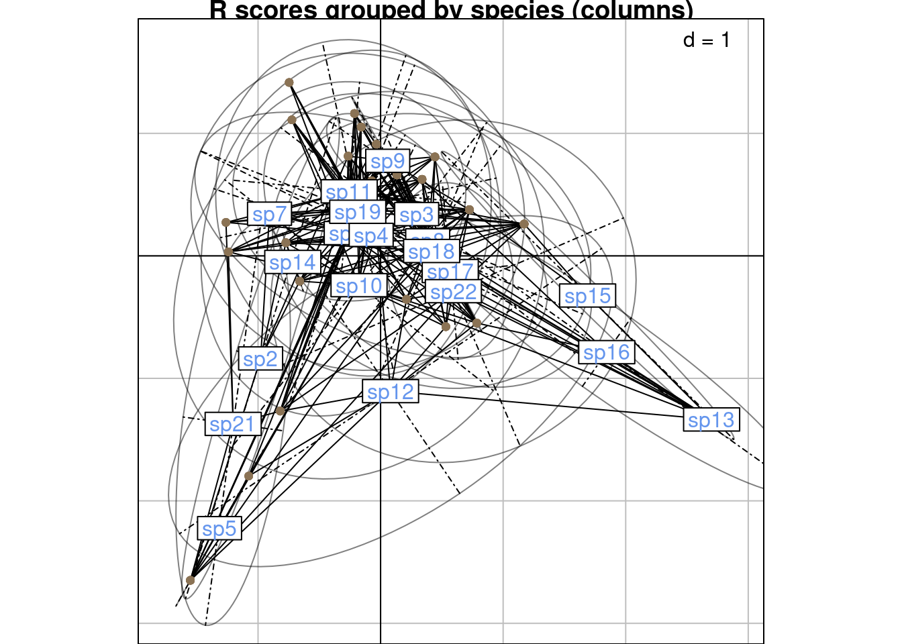
We can compare these plots to the RC scores plot below (grouped by species/columns):
s.class(scoreRC_scaled,
wt = Pfreq0$Freq,
fac = as.factor(Pfreq0$colind),
labels = colnames(Y),
plabels.col = params$colspp,
main = "RC scores grouped by species (columns)")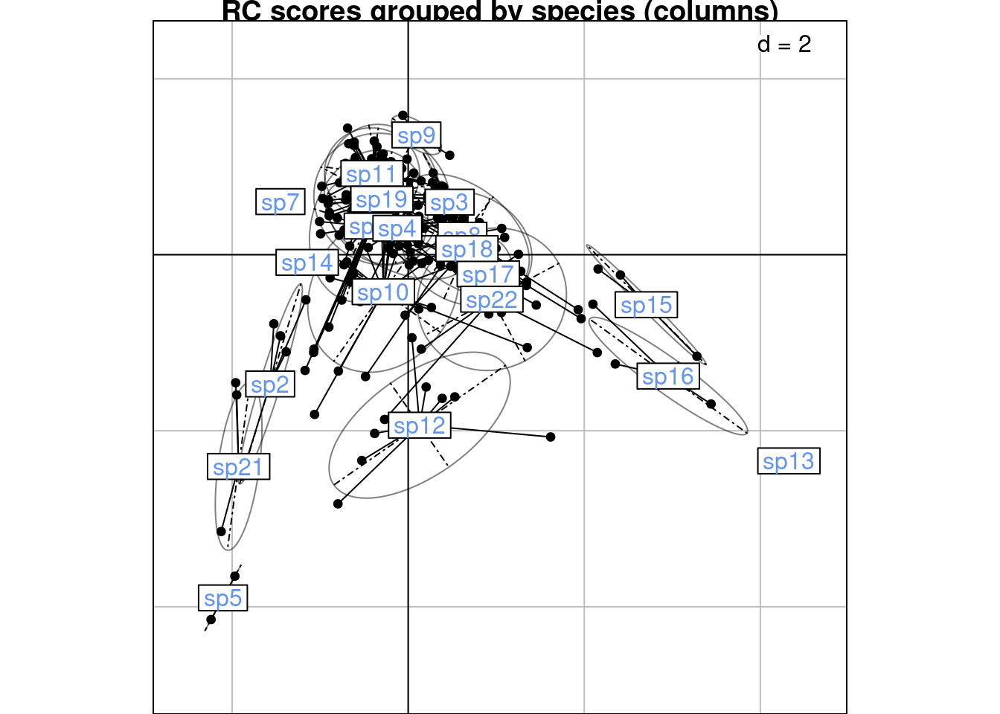
We can also compare means/variances extracted from the plots:
# Plot with RC score = H
xax <- 2
yax <- 3
sRC <- s.class(scoreRC_scaled,
xax = xax, yax = yax,
wt = Pfreq0$Freq,
fac = as.factor(Pfreq0$colind),
plot = FALSE)
# Plot with R score
sR <- s.class(scoreR,
xax = xax, yax = yax,
wt = Pfreq0$Freq,
fac = as.factor(Pfreq0$colind),
plot = FALSE)
# Compare means
fac <- sqrt(mu)/sqrt(2*lambda)
res <- sRC@stats$means/(sR@stats$means %*% diag(fac[c(xax, yax)]))
all(res - 1 < zero) # means are the same[1] TRUE# Compare variances
varRC_ax1 <- (sapply(sRC@stats$covvar, function(x) x[1, 1])*(2*mu[xax]))
varR_ax1 <- sapply(sR@stats$covvar, function(x) x[1, 1])
res <- varRC_ax1[-sp1]/varR_ax1[-sp1]
all(res - 1 < zero) # Same on ax1[1] TRUEvarRC_ax2 <- (sapply(sRC@stats$covvar, function(x) x[2, 2])*(2*mu[yax]))
varR_ax2 <- sapply(sR@stats$covvar, function(x) x[2, 2])
res <- varRC_ax2[-sp1]/varR_ax2[-sp1]
all(res - 1 < zero) # Same on ax2[1] TRUE# Define plotting function
plot_meanvar <- function(mean, var, groupnames, x = 1, col = "black") {
ggplot() +
geom_point(aes(x = mean[, x],
y = reorder(groupnames, -mean[, x])),
colour = col, shape = 1) +
geom_linerange(aes(x = mean[, x],
y = reorder(groupnames, -mean[, x]),
xmin = mean[, x] - var[, x],
xmax = mean[, x] + var[, x]),
colour = col) +
xlab(paste("Axis", x)) +
theme_linedraw() +
theme(axis.title.y = element_blank())
}Let’s plot these means and variances along the first axis for rows and columns:
gr <- plot_meanvar(mean = mrows,
var = 3*sqrt(varrows),
groupnames = rownames(Y),
col = params$colsite) +
ggtitle("Rows (sites) mean and variance")
gc <- plot_meanvar(mean = mcols,
var = 3*sqrt(varcols), groupnames = colnames(Y),
col = params$colspp) +
ggtitle("Columns (species) mean and variance")
gr + gc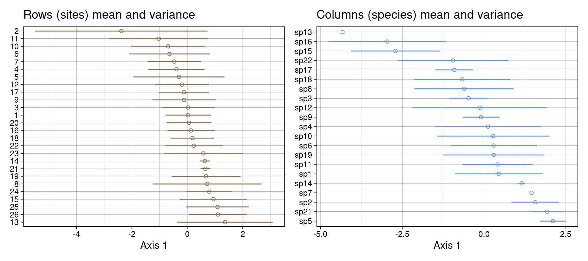
Same result with ade4 function:
s1d.distri(score = ca$li[, 1],
dfdistri = as.data.frame(Y),
ppoints.col = params$colspp,
plabels.col = params$colspp)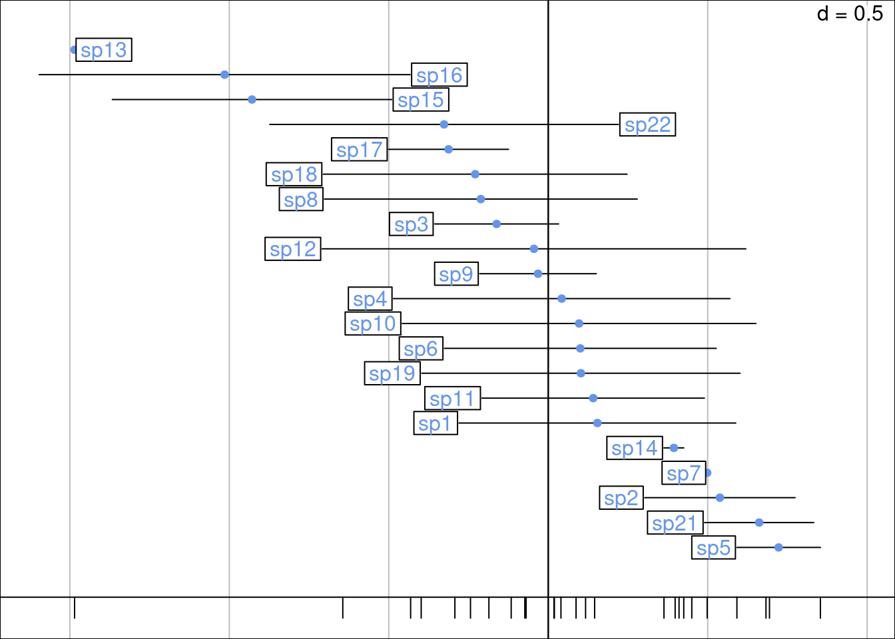
s1d.distri(score = ca$co[, 1],
dfdistri = as.data.frame(t(Y)),
ppoints.col = params$colsite,
plabels.col = params$colsite)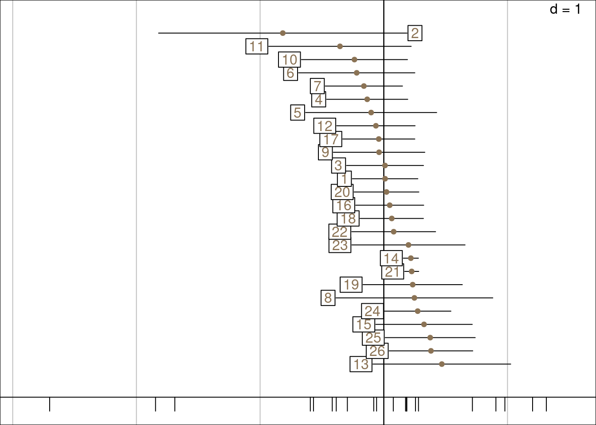
gr <- ggplot() +
geom_point(aes(x = covrows_kl2, y = reorder(rownames(Y), -covrows_kl2)),
col = params$colsite) +
xlab(paste("Covariances between axes", k, "and", l)) +
theme_linedraw() +
theme(axis.title.y = element_blank()) +
ggtitle("Rows (sites) covariances")
gc <- ggplot() +
geom_point(aes(x = covcols_kl, y = reorder(colnames(Y), -covcols_kl)),
col = params$colspp) +
xlab(paste("Covariances between axes", k, "and", l)) +
theme_linedraw() +
theme(axis.title.y = element_blank()) +
ggtitle("Columns (species) covariances")
gr + gc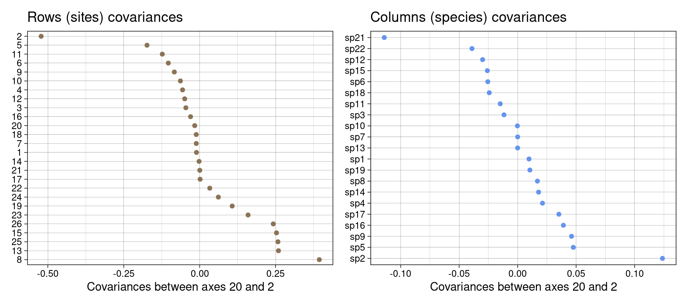
We can also plot the ellipses in 2 dimensions.
For that, we need to plot the ellipse summarizing the Gaussian bivariate law for each group. For example, for site \(i\) on axes \(k\) and \(l\) reference blog post:
The simplest equation (covariance zero, centered on the origin) is:
\[\left( \frac{x}{\sigma_k} \right)^2 + \left( \frac{y}{\sigma_l} \right)^2 = s\] The semi-axes are of length \(\sigma_k \sqrt{s}\) and \(\sigma_l \sqrt{s}\). \(s\) is the scaling factor allowing the ellipsis to encompass all data with a level of confidence \(p\). We have \(s = -2 \ln(1-p)\).
We can show that this equation is equivalent to
\[\begin{cases} x = \sigma_k \sqrt{s} \cos(t)\\ y = \sigma_l \sqrt{s} \sin(t) \end{cases}\] With \(t\) being an angle between 0 and \(2\pi\).
We write \(a\) the length of the semi-major axis and \(b\) the length of the semi-minor axis.
Now in case the values \(h_k(i, j)\) and \(h_l(i, j)\) are correlated, the covariance is not zero. Then, the semi-axes lengths are the square root of the eigenvaluesof \(\Sigma(i)\). Geometrically, we have an angle \(\theta\) between axis \(k\) and the semi-major axis. \(\theta\) can be computed as the direction of the first eigenvector \(v_1\): \(\theta = \arctan(v_1(2)/v_1(1))\).
The equation of the ellipsis is: \[\begin{cases} x = m_k(i) + a \cos(\theta) \cos(t) - b \sin(\theta) \sin(t) \\ y = m_l(i) + a \sin(\theta) \cos(t) + b \cos(\theta) \sin(t) \end{cases}\] With \(a = \sqrt{\lambda_1} \sqrt{s}\) and \(b = \sqrt{\lambda_2} \sqrt{s}\). (Here we assumed the origin could be different from zero and shifted the center with \(m_k(i)\) and \(m_l(i)\).)
gaussian_ellipses <- function(vars, covars, means, x = 1, y = 2,
t = seq(0, 2*pi, 0.01), s = 1.5, ind = 1:nrow(vars)) {
# Length of angles
nt <- length(t)
# Initialize matrix
ellipses_mat <- matrix(nrow = length(t)*nrow(vars),
ncol = 3)
for (i in ind) {
# Define variance covariance matrix
covar <- covars[i]
varx <- vars[i, x]
vary <- vars[i, y]
mat <- matrix(data = c(varx, covar,
covar, vary),
nrow = 2)
# Eigenvalues
vp <- eigen(mat)$values
a <- s*sqrt(max(vp)) # semi major axis
b <- s*sqrt(min(vp)) # semi minor axis
# angle (inclination of ellipse from axe x)
if(covar == 0 & varx >= vary){ # covariance is zero and varx is big
theta <- 0
}else if(covar == 0 & varx < vary){ # covariance is zero and varx is small
theta <- pi/2
}else{ # "normal" cases
# get eigenvector associated to largest eigenvalue
v1 <- eigen(mat)$vectors[,1]
# theta is the angle of the eigenvector with x -> ie
# arctan of the slope given by the first eigenvector
theta <- atan(v1[2]/v1[1])
}
# x and y coordinates of ellipse
xellipse <- means[i, x] + a*cos(theta)*cos(t) - b*sin(theta)*sin(t)
yellipse <- means[i, y] + a*sin(theta)*cos(t) + b*cos(theta)*sin(t)
indmin <- (i-1)*nt + 1
indmax <- i*nt
ellipses_mat[indmin:indmax, ] <- matrix(c(xellipse, yellipse, rep(i,nt)),
ncol = 3)
}
res <- as.data.frame(ellipses_mat)
colnames(res) <- c("xell", "yell", "group")
return(res)
}plot_ellipses <- function(var, covar, mean, groupnames,
H, Pfreq0, col = "black", ellipses = 1:nrow(var), s = 1.5, x = 1, y = 2) {
if (all(groupnames %in% Pfreq0$row)) {
indivtype <- "row"
} else {
indivtype <- "colind"
}
rows <- which(Pfreq0[[indivtype]] %in% ellipses)
# Get gaussian ellipses for the required groups
ell <- gaussian_ellipses(var, covar, mean, s = s, x = k, y = l, ind = ellipses)
# Plot ellipses from variance and covariance
ggplot() +
geom_hline(yintercept = 0) +
geom_vline(xintercept = 0) +
geom_point(aes(x = H[, x], y = H[, y], alpha = Pfreq0[[indivtype]] %in% ellipses),
col = col,
show.legend = FALSE) +
scale_alpha_manual(values = c("TRUE" = 1, "FALSE" = 0.2)) +
# Label ellipse points only
geom_text_repel(aes(x = H[rows, x], y = H[rows, y],
label = paste(Pfreq0$row[rows], Pfreq0$col[rows])),
col = col) +
geom_polygon(data = ell,
aes(x = xell, y = yell, group = group),
fill = col, col = col, alpha = 0.5) +
theme_linedraw() +
geom_label(aes(x = mean[, x], y = mean[, y], label = groupnames),
colour = col) +
xlab(paste("Axis", x)) +
ylab(paste("Axis", y))
}gr <- plot_ellipses(varrows, covrows_kl2, mrows,
groupnames = rownames(Y), H = H, Pfreq0 = Pfreq0,
col = params$colsite) + ggtitle("Rows (sites)")Warning in sqrt(min(vp)): Production de NaN
Warning in sqrt(min(vp)): Production de NaNgc <- plot_ellipses(varcols, covcols_kl, mcols,
groupnames = colnames(Y), H = H, Pfreq0 = Pfreq0,
col = params$colspp) + ggtitle("Columns (species)")Warning in sqrt(min(vp)): Production de NaNgr + gcWarning: ggrepel: 196 unlabeled data points (too many overlaps). Consider
increasing max.overlapsWarning: ggrepel: 196 unlabeled data points (too many overlaps). Consider
increasing max.overlaps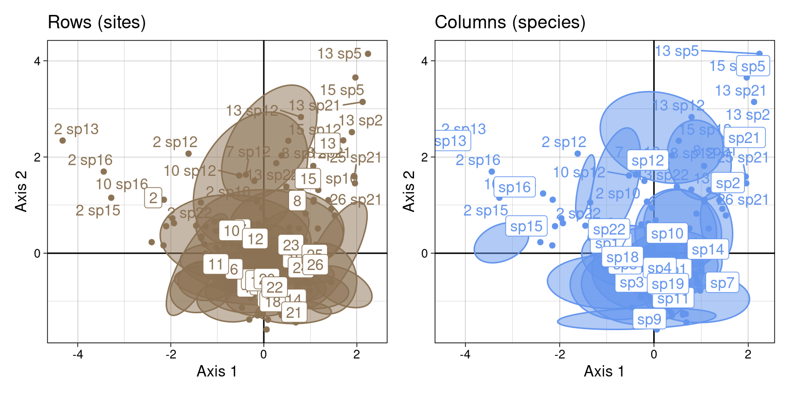
# Choose a subset of sites
i <- c(2, 13, 18)
gr <- plot_ellipses(varrows, covrows_kl2, mrows,
groupnames = rownames(Y), H = H, Pfreq0 = Pfreq0,
ellipses = i, col = params$colsite) +
ggtitle("Rows (sites)")Warning in sqrt(min(vp)): Production de NaN# Choose a subset of species
j <- c(16, 12, 20) # sp21 is index 20
gc <- plot_ellipses(varcols, covcols_kl, mcols,
groupnames = colnames(Y), H = H, Pfreq0 = Pfreq0,
ellipses = j, col = params$colspp) +
ggtitle("Columns (species)")
gr + gcWarning: ggrepel: 2 unlabeled data points (too many overlaps). Consider
increasing max.overlaps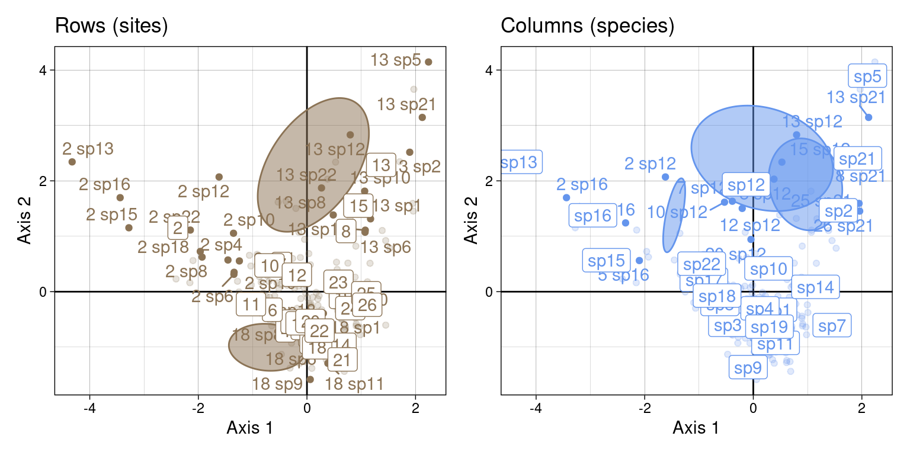
Reproduce the same plots with ade4:
s.class(rec_ca[, 1:2],
wt = rec_ca$Weight,
fac = rec_ca$Row,
col = params$colsite,
main = "Rows (sites)")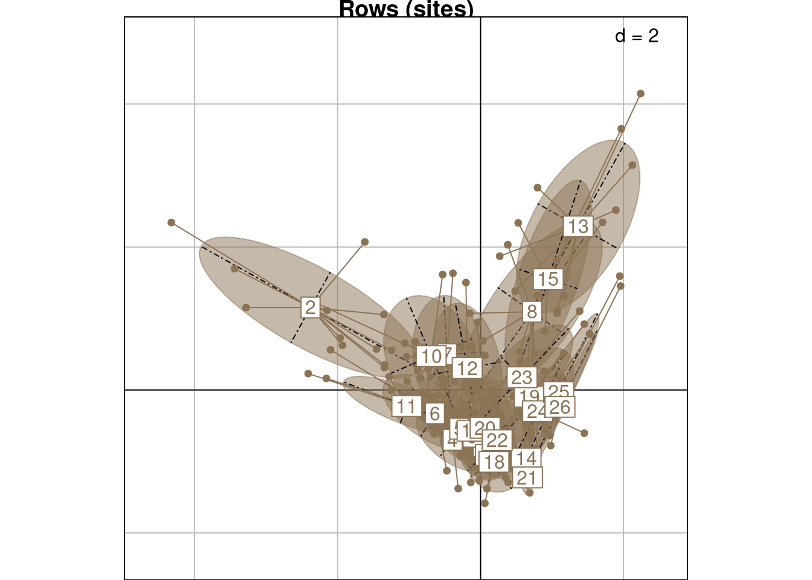
s.class(rec_ca[, 1:2],
wt = rec_ca$Weight,
fac = rec_ca$Col,
col = params$colspp,
main = "Columns (species)")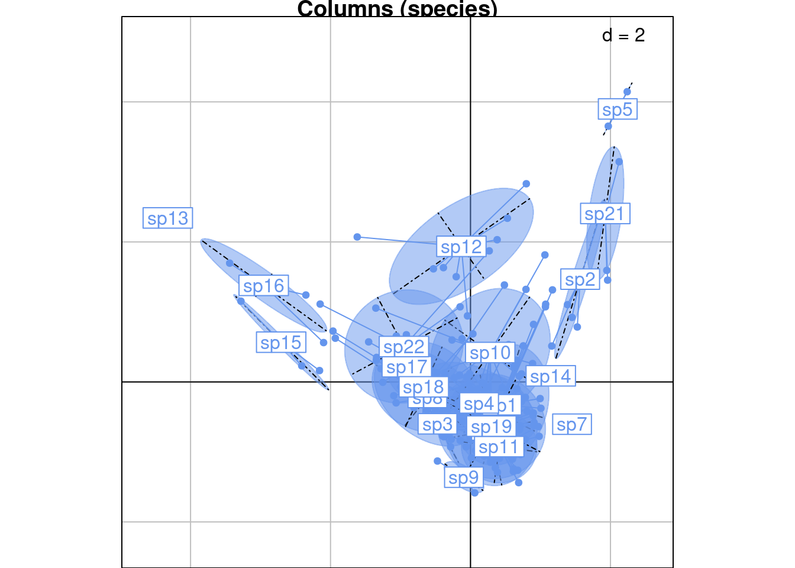
Let’s test formula (3) in Thioulouse and Chessel (1992):
\[L_k(i) = \sum_{j=1}^c p_{j|i} C_k(j)\]
with \(p_{j|i} = \frac{y_{ij}}{y_{i \cdot}}\). This formula relates species and samples scores in CA.
With our notation:
\[u^\star_{ik} = \sum_{j=1}^c p_{j|i} v^\star_{jk}\]
# Test formula for a given k
k <- 2
# compute pj|i
yi_ <- rowSums(Y)
pjcondi <- sweep(Y, 1, yi_, "/")
# Compute the formula that should be equal th Lk(i)
res <- vector(mode="numeric", length=nrow(Y))
for (i in 1:nrow(Y)) {
res[i] <- sum(pjcondi[i, ]*ca$co[, k])
}res/ca$li[, k] # not equal [1] 0.4925288 0.4925288 0.4925288 0.4925288 0.4925288 0.4925288 0.4925288
[8] 0.4925288 0.4925288 0.4925288 0.4925288 0.4925288 0.4925288 0.4925288
[15] 0.4925288 0.4925288 0.4925288 0.4925288 0.4925288 0.4925288 0.4925288
[22] 0.4925288 0.4925288 0.4925288 0.4925288 0.4925288We find that in fact the correct formula is
\[L_k(i) = \frac{1}{\sqrt{\lambda_k}}\sum_{j=1}^c p_{j|i} C_k(j)\]
Or, with our notation:
\[v^\star_{ik} = \frac{1}{\sqrt{\lambda_k}}\sum_{j=1}^c p_{j|i} u^\star_{jk}\]
res/sqrt(lambda[k])/ca$li[, k] [1] 1 1 1 1 1 1 1 1 1 1 1 1 1 1 1 1 1 1 1 1 1 1 1 1 1 1With this equality, we can indeed prove numerically the equivalence between mean computation using \(h_k(i, j)\) (Equations (12) and (14) in Thioulouse and Chessel (1992)) and using CA coordinates (computation in notebook not shown here).
The reciprocal scaling mean computed with \(\frac{\sqrt{\mu_k}}{\sqrt{2 \lambda_k}} v^\star_k(i)\) is the same as the weighted mean of the weighted means \(\frac{\sqrt{\mu_k}}{\sqrt{2 \lambda_k}} u^\star_k(j)\), where \(j\) is used to index all species occurring in site \(i\). So we can interpret species/site-wise means of the \(H\) scores as means of means of the other category.
i <- 1 # site
k <- 1:2 # axes
# Get the correspondences for site i
Hsub <- H[Pfreq0$row == i, k]
j <- Pfreq0$col[Pfreq0$row == i]
rownames(Hsub) <- paste0("s", i, "-", j)
# Get the weights of correspondences
wth <- Pfreq0$Freq[Pfreq0$row == i]
# Weighted mean of correspondences
h_i <- meanfacwt(Hsub, wt = wth)
h_i <- data.frame(t(h_i))
rownames(h_i) <- paste("rec", i)
# Get reciprocal scaling means computed from CA coordinates
# For site i
ca_i <- ca$li[i, k]*sqrt(mu[k])/sqrt(2*lambda[k])
rownames(ca_i) <- paste("CA", i)
# For species j present in site i (transformed coordinates)
ca_j <- sweep(ca$co[j, k], 2, sqrt(mu[k])/sqrt(2*lambda[k]), "*")# Compare weighted means
h_i/ca_i X1 X2
rec 1 1 1On this plot, we plot the CA coordinates for site \(i\) and for all species \(j\) in site \(i\) (scaled with a factor \(\frac{\sqrt{\mu_k}}{\sqrt{2\lambda_k}}\). We surimpose the reciprocal scaling correspondences for site \(i\) (purple dots).
NB: Means should be surimposed, I don’t know why they are not.
# Plot correspondences and mean
s.class(Hsub,
fac = factor(rep(paste("rec", i), nrow(Hsub))),
wt = wth,
ppoints.col = "darkgrey",
main = "Correspondences")
s.label(Hsub,
plabels.optim = TRUE, add = TRUE,
ppoints.col = "darkorchid",
plabels.col = "darkorchid")
s.label(ca_i,
plabels.col = params$colsite, add = TRUE)
s.label(h_i,
plabels.col = params$colsite, add = TRUE)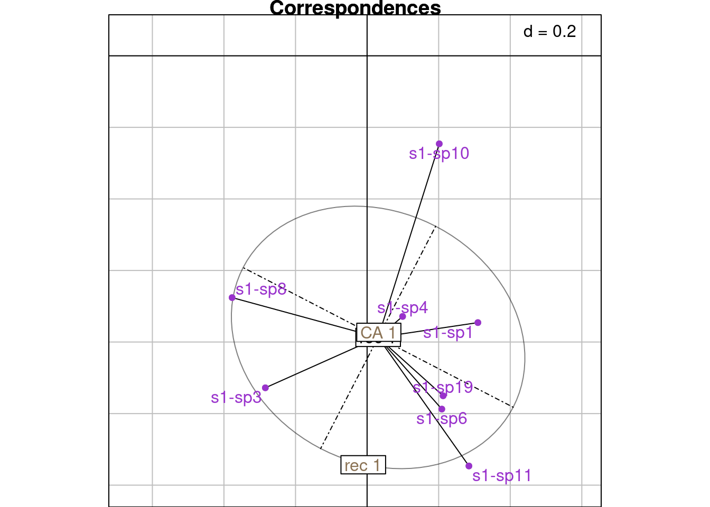
# Plot CA and mean
# On a separate plot because else ade4 goes crazy
s.class(ca_j,
ppoints.col = "grey",
fac = factor(rep(i, nrow(ca_j))),
wt = wth,
main = "Means")
s.label(ca_j,
plabels.optim = TRUE, add = TRUE,
plabels.col = params$colspp,
ppoints.col = params$colspp, )
s.label(ca_i,
plabels.col = params$colsite, add = TRUE)
s.label(h_i,
plabels.col = params$colsite, add = TRUE)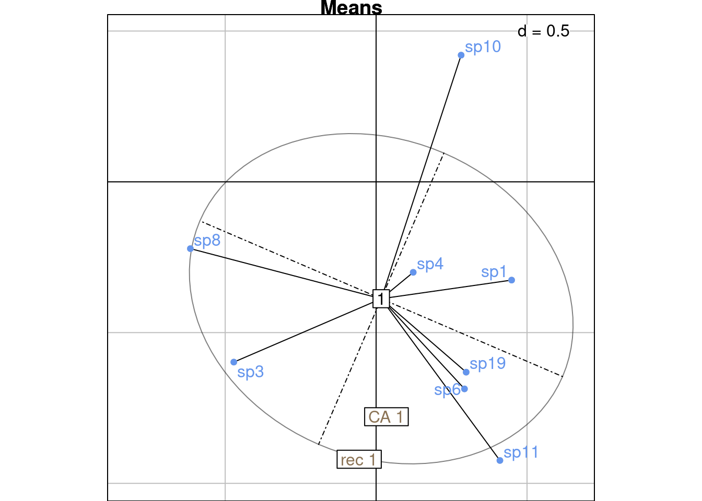
If we don’t want to find a new common space to plot correspondences in, we can remain in the 2 biplots showing \(V\) with \(U^\star\) (c1 and li) (scaling type 1 = rows niches) and \(U\) and \(V^\star\) (co and l1) (scaling type 2 = columns niches).
To do that, we define the “CA-correspondences†\(h1_k(i, j)\) for scaling type 1:
\[h1_k(i, j) = \frac{u^\star_k(i) + v_k(j)}{2}\]
# Initialize results matrix
H1 <- matrix(nrow = nrow(Pfreq0),
ncol = length(lambda))
for (k in 1:length(lambda)) { # For each axis
ind <- 1 # initialize row index
for (obs in 1:nrow(Pfreq0)) { # For each observation
i <- Pfreq0$row[obs]
j <- Pfreq0$col[obs]
H1[ind, k] <- (ca$li[i, k] + ca$c1[j, k])/2
ind <- ind + 1
}
}corresp <- paste(Pfreq0$row, Pfreq0$col, sep = "-")
multiplot(indiv_row = as.data.frame(H1),
indiv_row_lab = corresp,
row_color = "black")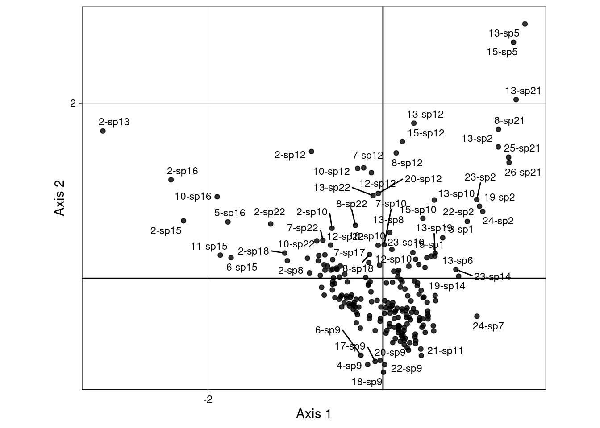
# Groupwise mean
mrows_nr <- meanfacwt(H1, fac = Pfreq0$row, wt = Pfreq0$Freq)
all(abs(abs(mrows_nr/ca$li) - 1) < zero) # means correspond to li[1] TRUEres <- mrows_nr %*% diag(sqrt(mu)/sqrt(2*lambda)) # factor sqrt(mu)/sqrt(2*lambda)
all(abs(res/mrows - 1) < zero) # same as recscal means with a factor sqrt(mu)/sqrt(2*lambda)[1] TRUE# Groupwise variance
varrows_nr <- varfacwt(H1, fac = Pfreq0$row, wt = Pfreq0$Freq)
res <- varrows_nr %*% diag(2/mu) # Factor 2/mu
all(abs(res/varrows) - 1 < zero)[1] TRUE# We could also multiply H1 before computing the variance
H1_scaled <- H1 %*% diag(sqrt(2/mu)) # Factor sqrt(2/mu)
varrows_nr_scaled <- varfacwt(H1_scaled, fac = Pfreq0$row, wt = Pfreq0$Freq)
all(abs(varrows_nr_scaled/varrows - 1) < zero)[1] TRUEs.class(H1, fac = Pfreq0$row,
wt = Pfreq0$Freq,
plabels.col = params$colsite,
main = "Non-reciprocal scaling")
s.class(H, fac = Pfreq0$row,
wt = Pfreq0$Freq,
plabels.col = params$colsite,
main = "Reciprocal scaling")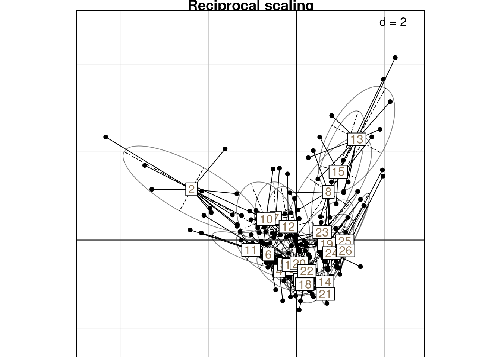
\(h1_k(i, j)\) can also be defined from the canonical correlation scores:
\[h1_k(i, j) = \frac{S_R \Lambda^{1/2} + S_C}{2}\]
# Find back the formula from the scores
H1_cancor <- ((scoreR[, 1:(c-1)] %*% diag(lambda^(1/2)) + scoreC))/2
# H1_cancor_scaled <- scalewt(H1_cancor, wt = wt/sum(wt))
all(abs(abs(H1_cancor/H1) - 1) < zero)[1] TRUEWe define the “CA-correspondences†\(h2_k(i, j)\) for scaling type 2:
\[h2_k(i, j) = \frac{u_k(i) + v^\star_k(j)}{2}\]
# Initialize results matrix
H2 <- matrix(nrow = nrow(Pfreq0),
ncol = length(lambda))
for (k in 1:length(lambda)) { # For each axis
ind <- 1 # initialize row index
for (obs in 1:nrow(Pfreq0)) { # For each observation
i <- Pfreq0$row[obs]
j <- Pfreq0$col[obs]
H2[ind, k] <- (ca$l1[i, k] + ca$co[j, k])/2
ind <- ind + 1
}
}corresp <- paste(Pfreq0$row, Pfreq0$col, sep = "-")
multiplot(indiv_row = as.data.frame(H2),
indiv_row_lab = corresp,
row_color = "black")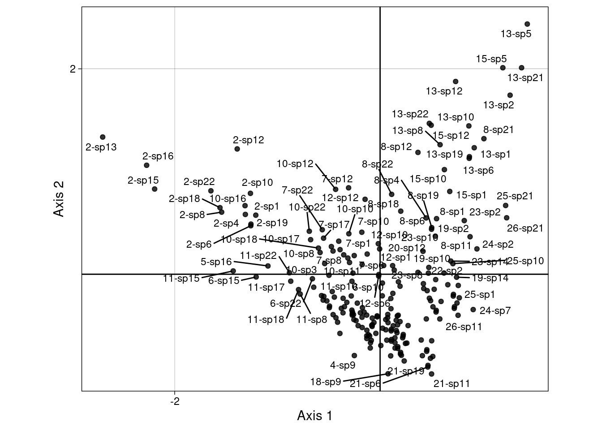
# Groupwise mean
mcols_nr <- meanfacwt(H2, fac = Pfreq0$col, wt = Pfreq0$Freq)
all(abs(abs(mcols_nr/ca$co) - 1) < zero) # equal to the co[1] TRUEres <- mcols_nr %*% diag(sqrt(mu)/sqrt(2*lambda))
all(abs(res/mcols - 1) < zero) # same as reciprocal scaling by a factor sqrt(mu)/sqrt(2*lambda)[1] TRUE# Groupwise variance
varcols_nr <- varfacwt(H2, fac = Pfreq0$col, wt = Pfreq0$Freq)
varcols_nr_scaled <- varcols_nr %*% diag(2/(mu)) # factor 2/mu
all(abs(varcols_nr_scaled[-sp1, ]/varcols[-sp1, ] - 1) < zero) # same as reciprocal scaling by a factor 2/mu[1] TRUEcolfac <- factor(Pfreq0$col)
s.class(H2, fac = colfac,
wt = Pfreq0$Freq,
plabels.col = params$colspp,
main = "Non-reciprocal scaling")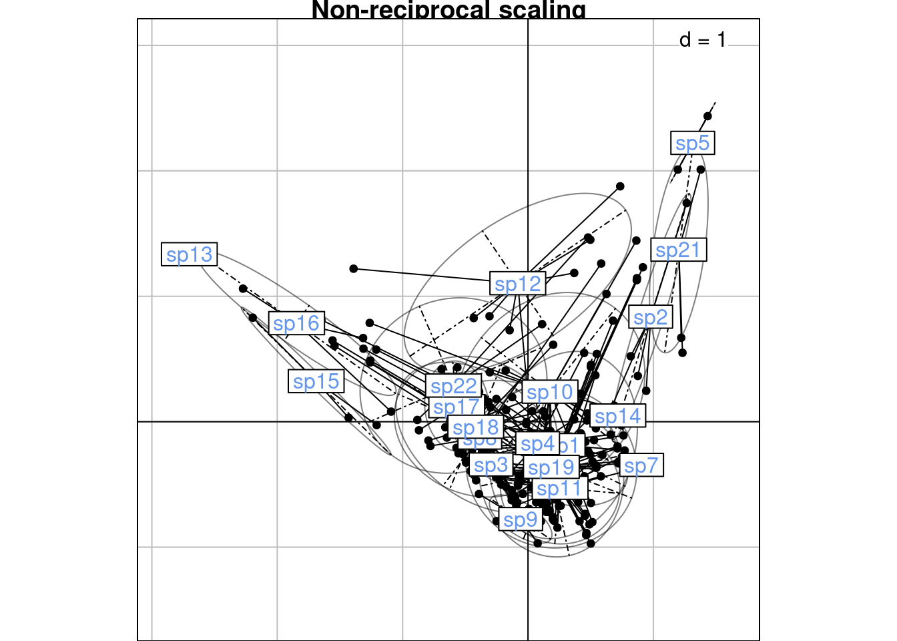
s.class(H, fac = colfac,
wt = Pfreq0$Freq,
plabels.col = params$colspp,
main = "Reciprocal scaling")
\(h2_k(i, j)\) can also be defined from the canonical correlation scores:
\[h2_k(i, j) = \frac{S_R + S_C \Lambda^{1/2}}{2}\]
# Find back the formula from the scores
H2_cancor <- ((scoreR[, 1:(c-1)] + scoreC %*% diag(lambda^(1/2))))/2
all(abs(abs(H2_cancor/H2) - 1) < zero)[1] TRUE